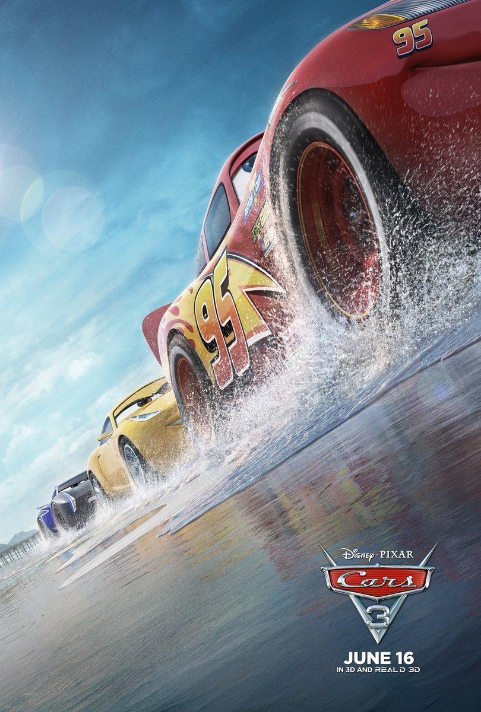

| Título | Resumo | Datos técnicos | Trailer |
|---|---|---|---|
 Cars |
El aspirante a campeón de carreras Rayo McQueen parece que está a punto de conseguir el éxito. Su actitud arrogante se desvanece cuando llega a una pequeña comunidad olvidada que le enseña las cosas importantes de la vida que había olvidado. | Dirección: John Lasseter
Codirección: Joe Ranft País: USA Año: 2006 Año de estreno: 2006 Duración: 116 min Género: Animación Guión: John Lasseter, Dan Fogelman, Joe Ranft, Kiel Murray, Phil Lorin, Jorgen Klubien Producción: Darla K. Anderson Música: Randy Newman Montaje: Ken Schretzmann |
|
 Cars 2 |
Rayo McQueen y su amigo, la grúa Mate, viajan al extranjero para participar en el primer Campeonato Mundial en el que se decidirá cuál es el coche más rápido del planeta. La primera escala es Tokio (Japón), donde Mate tendrá que convertirse en un espía secreto al verse envuelto inesperadamente en un caso de espionaje internacional, que lo llevará a París y a Londres. También vivirán una aventura de proporciones épicas al viajar a Porto Corsa (Italia), para disputar el Campeonato. | Dirección: John Lasseter
Codirección: Brad Lewis País: USA Año: 2011 Año de estreno: 2011 Duración: 113 min Género: Animación Guión: Ben Queen (basado en una historia original de John Lasseter, Brad Lewis y Dan Fogelman) Producción: Denise Ream Música: Randy Newman y Michael Giacchino Fotografía: Jeremy Lasky |
|
|  Cars 3 |
Sorprendido por una nueva generación de corredores, Rayo McQueen queda relegado repentinamente del deporte que tanto ama. Para retomar su carrera, va a necesitar la ayuda de una joven mecánica de carreras, Cruz Ramírez, que tiene su propio plan para ganar, además de la inspiración del fallecido Fabuloso Hudson Hornet y un par de giros inesperados. ¡Y para probar que el nº95 no está ni mucho menos acabado, el campeón tendrá que poner a prueba su valía en el gran circuito de la Copa Piston! | Dirección: Brian Fee
País: USA Año: 2017 Año de estreno: 2017 Duración: 102 min Género: Animación Guión: Kiel Murray, Bob Peterson y Mike Rich Producción: Kevin Reherbr> Música: Randy Newman Fotografía: Kim White, Jeremy Lasky |
|
Empresa 100% Real |
Copyright 2024 | Al usar esta página aceptas el uso de cookies |